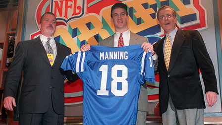
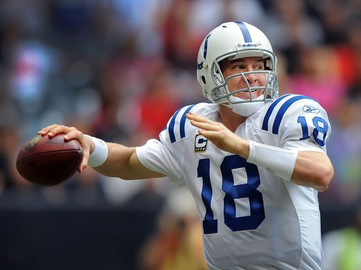
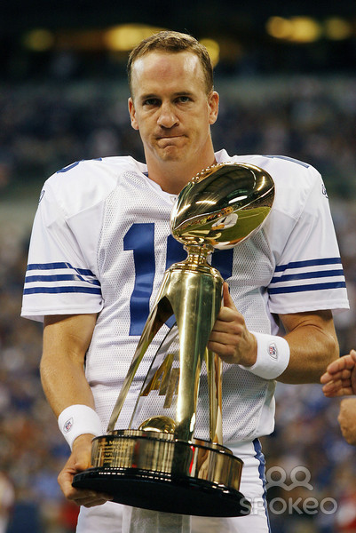

The first overall pick in the 1998 NFL Draft, Peyton Manning set rookie records in completions (326),
attempts (575), yards 3,739), and touchdowns (26). Manning wore this jersey during his record-setting
rookie season.


On Sept. 28, 2003 Peyton Manning became the first QB in NFL history to throw three “Perfect Games.”
A player is credited with a “Perfect Game” when he records a 158.3 passer rating.
After winning his first MVP award in 2003, Manning went on to capture the award four more times (2004, 2008, 2009 and 2013), becoming the first NFL player ever to achieve that distinction.
